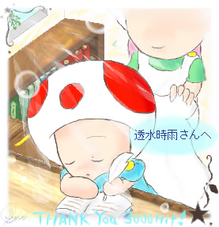

THANK YOU ３０００HIT！ 透水時雨様へ
|  |
･･Prince.
The continuation of this happiness abruptly.
I pray sincerely.
（･･王子様。
この幸せがずぅっと、続くことを。わたくしは、心から祈ります。）
透水時雨様からのリクエスト、カーレッジ幼少期です。
メールにてリクエストをいただいた時はパソの前で絶叫したりしてましたが（危
なんとかかんとか、完成に漕ぎ着けました。
今までの作品の中では、ベスト３に入るくらいには、気に入っています＾＾
管理人の作り出したシュチュエーションは、
『午後の勉強時間に寝ちゃってる王子様』（ぅわ）です；
初めは、どんな幼少の彼を描こうかどうかかなり迷ったのですが、
とりあえずこのような形に落ち着きました。
（候補に挙がったのが、
小さい頃だからおそらく（おそらく！？）やんちゃだったであろう、
カーレッジin城の中庭＆背景には大空を、とか、
いや、やはり孤独な年少期を過ごしたのだから、
多少なりとも影背負った表情のを、とか。）
･･妄想大爆発ですｖV
･･ゲフン；
周りの装飾とか木目模様とか、
細かい所も楽しんで描かせて頂きました♪
本当は、手前にアルタイル家の紋章とか、本棚の装飾とか、
描いてみたかったのですが断念しました･･orz
描き終わってから、もっと大きいサイズで描きゃあよかった、と
後悔しまくったのは、また、別の話。
･･げふんっ；（２回目。）
それでは透水時雨様、リクエストどうもありがとうございました！
透水時雨様のみ、保存、転載可能です。